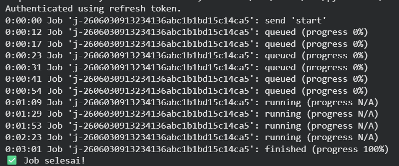
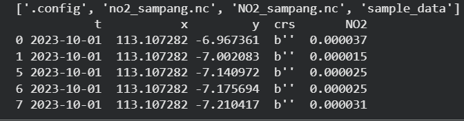
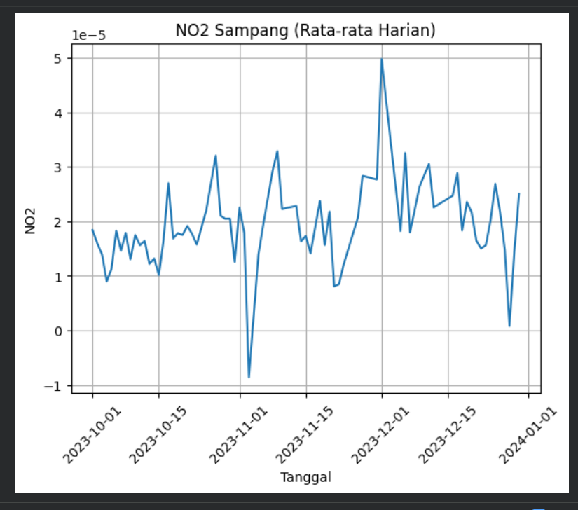

Pertemuan 14#
1. Latar Belakang#
Polusi udara merupakan salah satu masalah lingkungan yang berdampak besar terhadap kesehatan manusia. Salah satu gas pencemar utama adalah Nitrogen Dioksida (NO₂) yang berasal dari aktivitas kendaraan, industri, dan pembakaran bahan bakar fosil.
Dengan adanya teknologi satelit seperti Sentinel-5P, kita dapat memantau kualitas udara secara global, termasuk di daerah seperti Sampang.
2. Tujuan#
Tujuan dari praktikum ini adalah:
Mengambil data NO₂ dari satelit Sentinel-5P
Melakukan analisis temporal (berdasarkan waktu)
Memvisualisasikan perubahan NO₂
Menyajikan hasil dalam bentuk grafik dan web
3. Tools & Library#
Library yang digunakan:
openeo→ akses data satelitxarray→ membaca file NetCDFpandas→ olah datamatplotlib→ visualisasi
4. Instalasi Library#
!pip install openeo netcdf4 h5netcdf xarray pandas matplotlib
5. Koneksi ke openEO#
import openeo
conn = openeo.connect("https://openeo.dataspace.copernicus.eu")
conn.authenticate_oidc()
6. Area Penelitian (Sampang)#
bbox = {
"west": 113.08,
"south": -7.24,
"east": 113.39,
"north": -6.95
}
7. Pengambilan Data Satelit#
cube = conn.load_collection(
"SENTINEL_5P_L2",
spatial_extent=bbox,
temporal_extent=["2023-10-01", "2023-12-31"],
bands=["NO2"]
)
8. Agregasi Data#
Dilakukan agregasi temporal untuk mendapatkan rata-rata harian:
cube = cube.aggregate_temporal_period(
period="day",
reducer="mean"
)
9. Eksekusi dan Penyimpanan Data#
job = cube.execute_batch(
title="NO2 Sampang",
outputfile="no2_sampang.nc"
)

10. Membaca Data NetCDF#
import xarray as xr
import pandas as pd
ds = xr.open_dataset("no2_sampang.nc", engine="netcdf4")
df = ds.to_dataframe().reset_index()
df = df.dropna()
df.head()

#11 Struktur Data#
Data yang diperoleh memiliki struktur:
Kolom |
Keterangan |
|---|---|
t |
waktu |
x |
longitude |
y |
latitude |
NO2 |
nilai polusi |
Preprocessing Data#
Tahap preprocessing dilakukan untuk membersihkan dan menyiapkan data sebelum analisis lebih lanjut.
11.1 Membaca Data NetCDF#
import xarray as xr
import pandas as pd
ds = xr.open_dataset("no2_sampang.nc", engine="netcdf4")
df = ds.to_dataframe().reset_index()
11.2 Melihat Struktur Data#
print(df.head())
print(df.info())
Tujuan:
Mengetahui kolom yang tersedia
Mengetahui tipe data
Mengecek apakah ada data kosong
11.3 Menghapus Missing Value#
df = df.dropna()
Penjelasan:
Data satelit sering memiliki nilai kosong (NaN)
Baris dengan nilai kosong dihapus agar tidak mengganggu analisis
11.4 Konversi Format Waktu#
df['t'] = pd.to_datetime(df['t'])
Penjelasan:
Mengubah kolom waktu menjadi format datetime
Mempermudah analisis berbasis waktu
11.5 Seleksi Kolom yang Digunakan#
df = df[['t', 'NO2']]
Penjelasan:
Mengambil hanya kolom yang relevan
Mengurangi kompleksitas data
11.6 Agregasi Data (Rata-rata Harian)#
df_grouped = df.groupby('t')['NO2'].mean().reset_index()
Penjelasan:
Menghitung rata-rata NO₂ per hari
Mengubah data spasial menjadi time series
11.7 Normalisasi Data (Opsional)#
df_grouped['NO2_norm'] = (
df_grouped['NO2'] - df_grouped['NO2'].min()
) / (
df_grouped['NO2'].max() - df_grouped['NO2'].min()
)
Penjelasan:
Mengubah skala data ke rentang 0–1
Berguna untuk analisis machine learning
11.8 Export ke CSV#
df_grouped.to_csv("no2_sampang_clean.csv", index=False)
Hasil Preprocessing#
Dataset akhir berisi:
waktu (t)
nilai NO₂ rata-rata
nilai NO₂ yang sudah dinormalisasi (opsional)
Data ini siap digunakan untuk:
visualisasi
analisis tren
machine learning
12. Visualisasi Data#
import matplotlib.pyplot as plt
df['t'] = pd.to_datetime(df['t'])
df_grouped = df.groupby('t')['NO2'].mean().reset_index()
plt.figure()
plt.plot(df_grouped['t'], df_grouped['NO2'])
plt.title("Grafik NO2 Sampang")
plt.xlabel("Tanggal")
plt.ylabel("NO2")
plt.xticks(rotation=45)
plt.grid()
plt.show()
13. Export Data ke CSV#
df_grouped.to_csv("no2_sampang.csv", index=False)
14. Visualisasi#

15. Analisis#
Dari grafik yang dihasilkan:
Terlihat fluktuasi nilai NO₂ setiap hari
Nilai NO₂ cenderung stabil namun terdapat kenaikan di beberapa tanggal
Hal ini bisa disebabkan oleh aktivitas manusia atau kondisi cuaca
16. Kesimpulan#
Data satelit Sentinel-5P dapat digunakan untuk memantau kualitas udara
openEO mempermudah pengambilan data
Visualisasi membantu memahami pola polusi udara
17. Saran Pengembangan#
Menambahkan visualisasi peta
Menggunakan data lebih panjang (1 tahun)
Membandingkan dengan kota lain